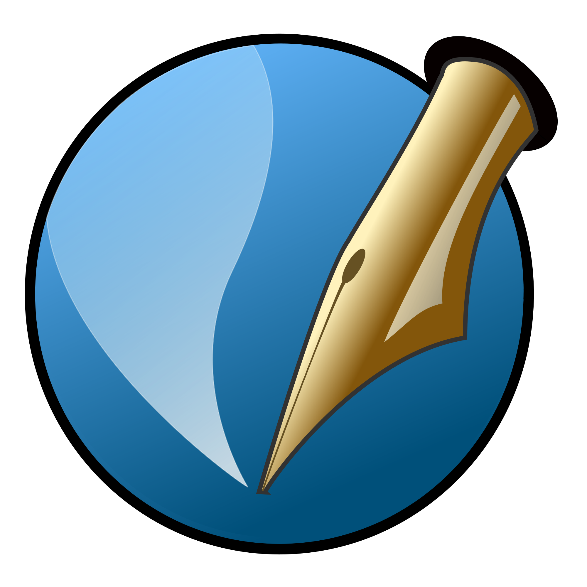
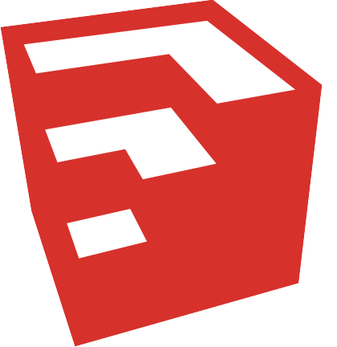

Мои работы
|  | Scribus (Скрибус) — это приложение для визуальной вёрстки документов, созданное для пользователей Linux, UNIX, OS X, OS/2, eCS, Haiku и Windows, по концепции аналогичное Adobe InDesign и QuarkXPress. |
 |
Inkscape (Инкскейп) — свободно распространяемый векторный графический редактор, удобен для создания как художественных, так и технических иллюстраций (вплоть до использования в качестве САПР общего назначения, чему также способствует лёгкость обмена чертежами). Это стало возможным во многом благодаря открытому формату SVG, развиваемому консорциумом W3C. Формат SVG позволяет создавать иллюстрации различного типа, в том числе анимированные. |
 |
GNU Image Manipulation Program или GIMP (Гимп) — свободно распространяемый растровый графический редактор, программа для создания и обработки р астровой графики и частичной поддержкой работы с векторной графикой. Проект основан в 1995 г оду Спенсером Кимбелломruen и Питером Маттисомruen как дипломный, в настоящий момент поддерживается группой добровольцев. |
|  | SketchUp (Скетч Ап) — программа для моделирования относительно простых трёхмерных объектов — строений, мебели, интерьера. В марте 2006 года была приобретена компанией Google вместе с небольшой фирмой @Last Software. В апреле 2012 Google продал SketchUp компании Trimble Navigation, сумма сделки не разглашается. Существуют две версии программы — бесплатная для некоммерческого использования, ограниченная по функциональности SketchUp Make (прежде всего относительно экспортирования в другие форматы), и платная SketchUp Pro. |
| Apache OpenOffice (ранее OpenOffice.org, OO.org, OO.o) — свободный пакет офисных приложений. Конкурирует с коммерческими офисными пакетами (в том числе Microsoft Office) как на уровне форматов, так и на уровне интерфейса пользователя. |